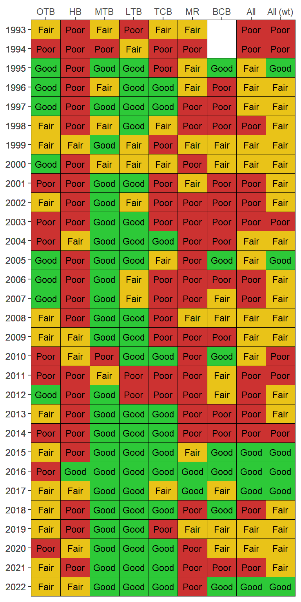

COC-1
Address hot spots of sediment contamination in the bay
OBJECTIVES:
Identify and remediate priority “hot spots” of sediment contamination in the bay. Continue sediment quality and benthic monitoring in the bay and expand to tidal tributaries and rivers. Incorporate benthic community targets in management plans.
STATUS:
Ongoing. Using the Tampa Bay Benthic Index, eight priority hot spots were identified in Tampa Bay. A Sediment Quality Action Plan was developed for the highest priority site, McKay Bay, and initial assessment has been completed.
BACKGROUND:
Monitoring of benthic, or bottom, habitats has been ongoing since 1993 with more than 1,500 samples analyzed for environmental contamination, including chemical and physical indicators and biological indicators like benthic community composition. The Environmental Protection Commission of Hillsborough County (EPCHC) coordinates the Tampa Bay Benthic Monitoring Program with participation from Manatee and Pinellas Counties.

Over the last 20 years, the condition of Tampa Bay benthic communities baywide has been “Fair” to “Poor”, with “Good” conditions in Middle and Lower Tampa Bay in most years and lower trending scores in Old Tampa Bay and Hillsborough Bay. Based on these long term monitoring data, increased benthic monitoring of major river systems (e.g., Hillsborough, Palm, Alafia and Little Manatee Rivers) and minor tidal tributaries is needed (see Action BH-8), and benthic community indicators and targets should be incorporated into tidal stream habitat management plans (see Actions BH-1 and BH-9).
Benthic monitoring is important for identifying hot spots of sediment contamination. Using monitoring data, the Tampa Bay Benthic Index (TBBI) provides a tool for assessing the health of benthic habitats. This index assesses the severity of contamination based on lack of diversity or abundance of benthic organisms, low dissolved oxygen or high levels of contaminants of concern (COCs). COCs include toxic chemicals like heavy metals, polycyclic aromatic hydrocarbons (PAHs), polychlorinated biphenols (PCBs) and organic pesticides. Because COCs can persist for decades in aquatic sediments and some can bioaccumulate in the food web, these hot spots pose health risks to fish, wildlife and humans.
Pesticides | PCBs | HPAHs | Metals | |
|---|---|---|---|---|
Upper Hillsborough Bay | x | x | x | x |
Lower Hillsborough Bay | x | x | ||
McKay Bay | x | x | x | |
Boca Ciega Bay | x | x | ||
Bayboro Harbor | x | x | x | |
Adjacent to Bayboro | x | x | ||
Western Old Tampa Bay | x | x | x |
In 2007, the Sediment Quality Assessment Group identified eight priority “hot spot” areas in Tampa Bay with low TBBI scores, indicating elevated contamination and reduced benthic diversity. These are:
- McKay Bay
- East Bay
- Ybor Channel
- West Davis Island
- Largo Inlet
- Westshore
- Bayboro Harbor/Port of St. Petersburg
- Apollo Beach/Big Bend

Through a cooperative effort of TBEP partners, a Sediment Quality Action Plan (SQAP) was developed in 2011 for the highest-ranking hotspot, McKay Bay, where 46% of benthic sediments are contaminated by PAHs, PCBs and metals in concentrations high enough to threaten the organisms living in the bay. Despite its urban location and impacted sediments, McKay Bay provides important wildlife habitat with its diversity of mudflats, mangroves, saltmarshes and oyster bars. The McKay Bay SQAP recommends initial steps to 1) identify and control external sources of COCs from upland sites with known soil or groundwater contamination and from stormwater runoff, and 2) assess ecological and human health risks from contaminated sediments.

Follow-up studies in 2014, funded by the Tampa Bay Environmental Restoration Fund, showed McKay Bay sediments are toxic to some animals. In tests of a variety of fish and shellfish, PAHs found in clam tissues exceeded U.S. Environmental Protection Agency thresholds for ecological effects in some areas; and two PAHs found in test animal tissue exceeded EPA screening levels for human health of subsistence fishers at all McKay Bay sites. These results highlight the need for continuing risk assessments and tracking of updated standards. The last baywide risk assessment for COCs was published in 1995.